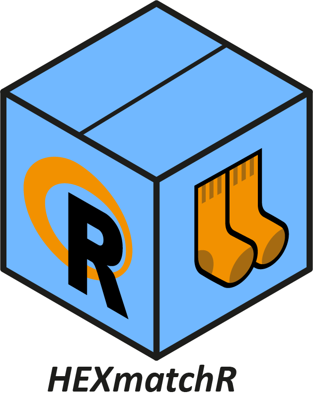
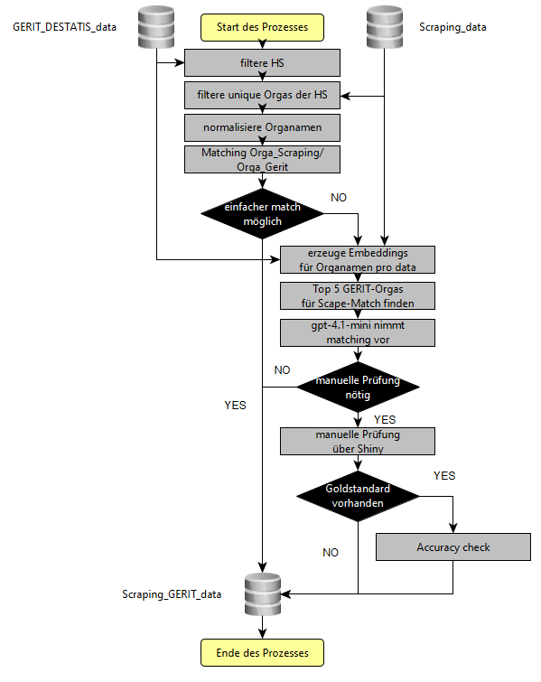

HEXmatchR 
HEXmatchR matched Organisationsnamen einer Universität der HEX-Scraping-Daten mit denen der entsprechenden GERIT-Organisationsnamen. Ziel des Matching ist es, Fachgebiete, Fächergruppen und Lehr- und Forschungsbereiche zu identifizieren und so DESTATIS-Metadaten (Studierendenzahlen, Lehrendenzahlen usw.) mit den HEX-Daten verbinden zu können.
Wie funktioniert HEXmatchR?
HEXmatchR stellt für die Nutzer einen simplen Wrapper namens run_matching_workflow bereit. Der Wrapper kann folgendermaßen verwendet werden:
workflow_result <- run_matching_workflow(
name_gerit = "Johann Wolfgang Goethe-Universität Frankfurt am Main",
df_scraped = df_sample,
gold_data = "data/db_data_universitaet_fam.rds",
output_dir = "matching-output-sample"
)Mit name_gerit spezifizieren wir den Namen der Universität im Kontext der GERIT-Daten. df_scraped ist unser Data Frame, den wir im Cleaning prozessieren. Wenn wir die Qualität des Matchings gegen den Goldstandard aus Matchingprozessen von Felix haben, können wir unter gold_data selbigen spezifizieren. Unter output_dir werden schließlich sämmtliche Ouputs des Matchings exportiert.
Der Prozess hinter run_matching_workflow() läuft in folgenden Schritten ab:
- GERIT-Daten filtern – Die Daten werden jeweils auf die entsprechende Hochschule gefiltert.
- Unique Organisationen identifizieren – Aus den Scraping- und GERIT-Daten werden die eindeutigen Organisationsnamen extrahiert.
- Namen normalisieren – Die Organisationsnamen werden vereinheitlicht.
- Matching – Das Matching erfolgt in zwei Stufen:
- 4.1 String-Match – Wo möglich, wird ein direkter Zeichenkettenvergleich durchgeführt.
- 4.2 Embedding-basiertes Matching – Schlägt der String-Match fehl, wird wie folgt vorgegangen:
- Embeddings für Scraping- und GERIT-Organisationen werden erzeugt.
- Auf dieser Basis werden die fünf ähnlichsten Matching-Partner ermittelt.
-
gpt-4.1wählt den besten Match aus den Top-5-Kandidaten. - Ist sich
gpt-4.1unsicher, werden die betreffenden Fälle manuell über eine Shiny-App anhand der Top-5-Kandidaten durch einen Menschen gematcht.
Das folgende Diagramm visualisiert den Gesamtprozess:

Voraussetzungen für HEXmatchR
Der Workflow braucht drei Dinge:
Scraping Daten inkl. der Variable
organisation: Die gescrapten Daten finden sich standardmäßig auf dem Sharepoint. Der Matchingprozess setzt - da er auf dem Cleaning aufbaut - eine möglichst saubereorganisation-Variable voraus.Die
db_data.rdseiner Hochschule, um ggf. bereits gemachte Organisationen zu übernehmen.Gerit-Destatis-Daten: Weiterhin werden die Gerit-Destatis-Daten benötigt:
data/GERIT_DESTATIS_data.rds. In ihnen befinden sich die SchlüsselvariableGerit_Orga, die mitorganisationaus den Scraping-Daten gemacht werden soll. Die Daten finden sich ebenfalls hier.
Installation
HEXmatchR kann simpel direkt von GitHub aus installiert werden:
remotes::install_github("Stifterverband/HEXmatchR")